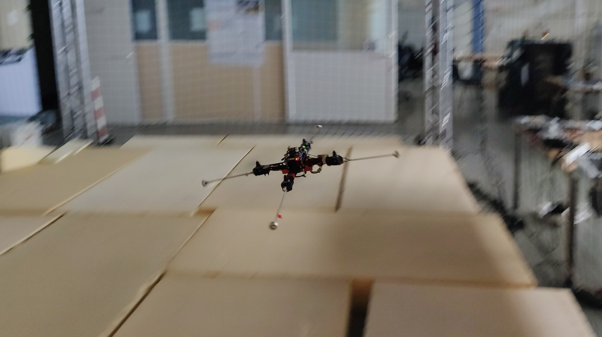

Hello, I am currently learning how to build websites and this webpage is a work in progress. The unfinished sections
will be updated shortly.
1 / 4
Piloting the aerial cable-towed system I built for my MSc. thesis
2 / 4
Testing automated takeoff proceedure with 8 quadrotors for multi-drone experiments
3 / 4
Testing the positioning accuracy of a teleoperated flying parallel robot with a decentralized
control law
4 / 4

Manual flight of a modified quadrotor to validate a dynamic parameter identification
proceedure
❮
❯